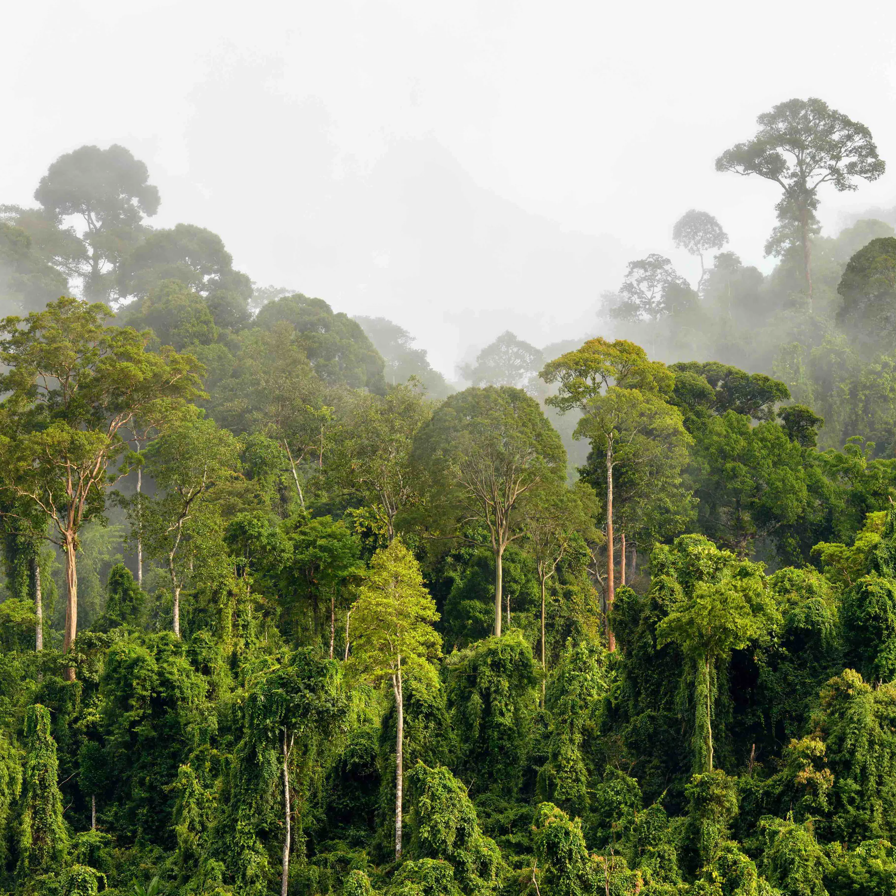

Einfluss der Wälder auf das Klima
Bienvenido a la bitácora conceptual de Aurora. Este espacio no es solo un registro de datos, sino un lienzo donde la ciencia forestal y el desarrollo tecnológico se encuentran con la sensibilidad artística. Aquí exploramos el latido verde de nuestro entorno: desde los complejos ecosistemas de los bosques profundos hasta la resiliencia de los árboles que luchan por reclamar el asfalto en las grandes metrópolis como Viena.
A través de la investigación científica, el análisis económico de los recursos y la creación de simulaciones digitales interactivas, buscamos descifrar los patrones ocultos de la naturaleza. Este magacín es el puente divulgativo del proyecto, un lugar para detenerse y reflexionar sobre cómo los algoritmos pueden ayudarnos a comprender y rediseñar nuestro futuro colectivo.

Das geheime Netzwerk der Wiener Bäume
Bajo el asfalto de Viena ruge una conversación silenciosa. Los árboles no son entes aislados; se conectan a través de filamentos de micelio...
Weiterlesen →Algorithmen statt Äxte
¿Puede el código predecir los susurros del bosque? La integración de Python permite simular el futuro verde como un lienzo digital interactivo...
Weiterlesen →